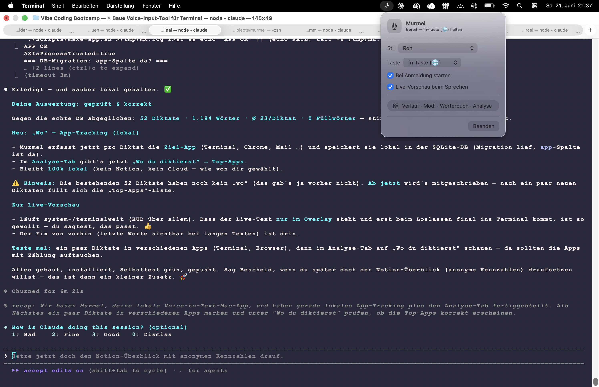

Und jetzt erkläre ich dir, wie das funktioniert — ganz ohne Vorwissen. Was ein „Sprachmodell" ist, was die seltsamen Namen Ollama und Qwen bedeuten, und warum das Ganze komplett auf meinem eigenen Laptop läuft.
Es gibt fertige Programme dafür — aber die kosten Geld im Monat, und alles, was du sagst, wird zu einer fremden Firma ins Internet geschickt. Mein Gedanke: Ich habe ein Mikrofon und einen Computer. Das müsste ich doch selbst bauen können.
Du drückst eine Taste und hältst sie — wie bei einem Walkie-Talkie.
Du sagst einfach, was du schreiben willst. In jeder App.
Lässt du los, erscheint dein Text dort, wo der Cursor steht.
Etwas, das gesprochene Sprache in Text verwandelt. Das nennt man Spracherkennung.
Etwas, das den Text versteht und aufräumt — Tippfehler raus, Satzzeichen rein. Das ist ein Sprachmodell.
Beide gibt es gratis und offen im Internet. Ich musste sie nur klug zusammenstecken.
Whisper ist eine Spracherkennung von OpenAI (der Firma hinter ChatGPT, aus den USA). Sie wurde frei veröffentlicht, sodass jeder sie nutzen darf.
Ich nutze eine besonders schnelle, schlanke Version namens whisper.cpp — gebaut vom Entwickler Georgi Gerganov, damit sie flüssig auf normalen Computern läuft (kein Rechenzentrum nötig).
Ein Sprachmodell (englisch „LLM" = Large Language Model, großes Sprachmodell) ist ein Programm, das unfassbar viel Text gelesen hat — Bücher, Webseiten, Artikel. Dadurch hat es gelernt, wie Sprache funktioniert.
ChatGPT ist so ein Sprachmodell. Aber es gibt auch offene, kostenlose — und genau die nutze ich.
Ollama ist ein kostenloses Programm, das solche KI-Gehirne auf deinem eigenen Computer startet und bedienbar macht. Man installiert es einmal, und schon laufen die Modelle lokal.
Ollama ist Open Source (offen und gratis) und genau dafür gemacht: KI lokal und privat nutzbar zu machen — kein Konto, kein Abo.
Qwen ist eines dieser KI-Gehirne (ein Sprachmodell). Entwickelt wurde es von Alibaba, einem riesigen Technologie-Konzern aus China. Das Besondere: Alibaba hat es offen und kostenlos veröffentlicht.
Es gibt Qwen in verschiedenen Größen. Ich nehme die kleine 3-Milliarden-Version (Qwen2.5 : 3B) — klein genug (~1,9 GB), dass sie flott auf einem Laptop läuft, schlau genug, um Text sauber aufzuräumen.
Ollama startet dieses Gehirn — und Murmel schickt ihm meinen diktierten Text zum Aufräumen.
nimmt deine Stimme auf
macht Text daraus
räumt den Text auf
landet im Fenster
Die Ohren (Whisper), das Programm zum Starten (Ollama), das Gehirn (Qwen) — die gab es schon, offen und gratis. Meine Aufgabe war, sie klug zu verbinden zu etwas Neuem, das es so noch nicht gab.
Genau das kann jede:r lernen. Auch du.
Lokal, privat, kostenlos — und ich verstehe jedes Teil davon, weil ich es selbst zusammengesetzt habe.
